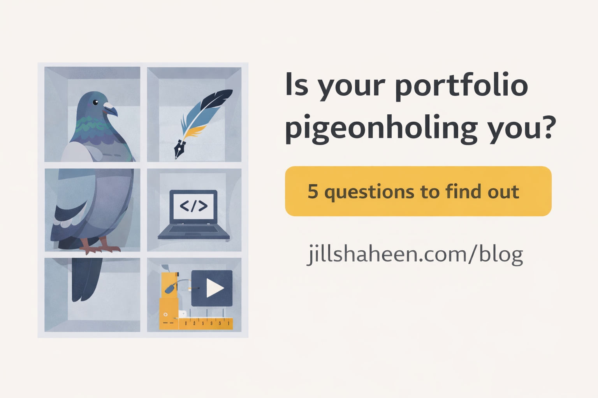
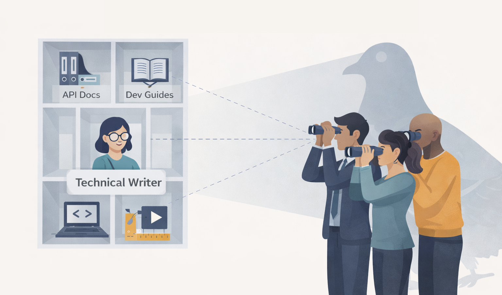

Your portfolio is pigeonholing you
When good work narrows your path

If your portfolio only shows writing samples without the So what?, you're positioning yourself as just a writer. The work you do has bigger impact than that. Let's make sure your portfolio shows it.
- Do your project titles describe the problems you solved?
- Can someone outside your role understand why each project matters?
- Do you reflect on the impact, outcomes, and tradeoffs for each project?
- Do the same strengths show up consistently throughout the portfolio?
- Could a reader imagine how your experiences might apply to any role?
More than one No? Your portfolio might be working against you.
The portfolio paradox
I've rebuilt my portfolio three times in the past five years. Each time, I thought I was being thorough and professional. Each time, I was accidentally narrowing how hiring managers saw me. Like mine, most portfolios are built with good intentions. They document our experience and prove we've done the work. And that creates the problem.
By focusing so carefully on what we have done (our past roles, titles, and responsibilities), we guide readers toward a single, overly specific version of us.
What pigeonholing looks like (and why it happens)
You've spent years building your career. You're really good at what you do. That experience shows up in your portfolio: the roles you've held, the products you've worked on, the skills you've honed over time. But that clarity is why pigeonholing happens.

When you list "Senior Technical Writer," "API Documentation," and "Developer Guides," people see one thing: a technical writer. They can't imagine you leading a content strategy initiative, reducing support case volume, or improving product design and direction.
When you're competing for roles during a tight job market, every application needs to work harder. A portfolio that positions you for exactly one type of role is a liability that you can't afford.
Reframing your portfolio around problems, not positions
Most portfolios default to chronological order or group by deliverable type. Both organize around you, not around problems you solve. This limits how others imagine you'd apply those skills in a new context. Start with a simple shift in perspective. Instead of thinking, "Here's the role or project," think, "Here's the problem that I helped solve."
Choose to organize your projects by user problems, business outcomes, complexity, scale, or maturity stage. Use summary-style titles that translate across roles.
| Instead of... | try this: |
|---|---|
| Getting Started Documentation | Reducing time-to-first-success for new users |
| SDK Documentation | Enabling faster integration for third-party developers |
| Docs Site Migration | Major platform migration: Maintaining continuity and trust |
| Documentation Team Lead | Establishing sustainable practices as Team Lead |
This framing immediately broadens the story. You're describing the same work, but the value becomes clearer to a wider audience. Engineering leaders, product managers, and platform teams all recognize onboarding friction as a real problem. Now you've offered context rather than a headline. Judgment, decision-making, and impact carry across roles far more easily than a project name or job title.
Making your portfolio flexible without making it vague
I know what you're thinking. If you stop anchoring your portfolio to a single role, you're going to seem scattered or unfocused.
Trust me... clarity comes from repetition. When the same strengths pop up across different projects, readers recognize patterns. They see how you approach complexity, advocate for users, and help teams scale. You can accomplish this without risking ambiguity:
- Add short summaries at the top of each project that explain why the work mattered.
- Emphasize outcomes, constraints, and tradeoffs.
- Use consistent language to describe your strengths across projects.
This approach also improves usability. Readers can skim, search, and focus on the work that feels most relevant to them, rather than trying to infer your range based on titles alone.
Using AI to reframe your work
AI tools can be genuinely useful when you are revisiting how you frame your experience. They are particularly good at generating alternative perspectives. You can ask them to rewrite a project description for different audiences, surface transferable skills you may be underemphasizing, or suggest adjacent roles that your experience could map to. Used this way, AI helps you explore options and spot patterns.
I used Claude to reframe my own portfolio. I asked it to rewrite each project description for three different audiences: content strategists, technical program managers, and executive-level product managers. The exercise revealed patterns I'd been too close to see. But Claude couldn't tell me which framing was most authentic to my actual strengths. Only I could make that call.
The important part is authorship. AI can assist with exploration, but the final framing still depends on your judgment, priorities, and voice.
Portfolios as living systems
Portfolios reflect how you want to be understood at a particular point in time. As your goals evolve, your portfolio should evolve alongside them. When you revisit your portfolio and the way you frame your work, it signals that your career is moving forward.
I'm rebuilding mine right now. Not because I don't know what I've done. I know that cold. But because I understand that what I've done isn't the same as what I can do next.
Ask someone outside your role what they think you do after skimming your site for two minutes. If the answer is, "You write documentation," then you might be presenting all you do too narrowly. A few small adjustments can turn your portfolio into a tool that creates more options for your future.
This post is part of Per the docs, a monthly collaborative series where technical writers explore different aspects of our craft. Each month features a new topic with perspectives from writers across the community. Read more perspectives in the series:
January 2026 topic: Portfolios